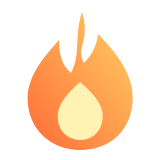
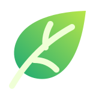
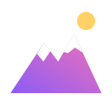
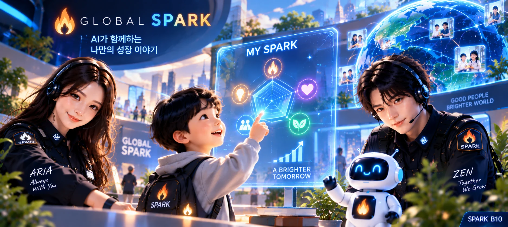
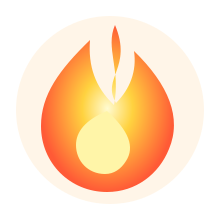
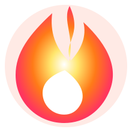
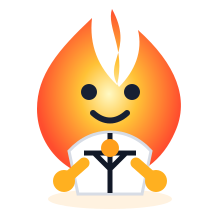
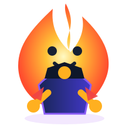
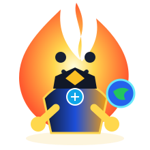

아이의 작은 좋은 행동을
오늘 누군가 발견해 준다면?
원장님, 관장님. 아이들의 선한 행동과 도전을 발견하고 칭찬하며 성장으로 연결하는 GLOBAL SPARK에 초대합니다.
좋은 행동은 왜
그냥 지나가 버릴까요?
시험점수와 경기 결과는 남지만, 친구를 도운 마음과 다시 도전한 용기는 쉽게 사라집니다. GLOBAL SPARK는 그 작은 순간을 놓치지 않기 위해 시작했습니다.

점수보다 먼저,
현실의 행동을 봅니다.
“오늘 어떤 좋은 일을 했니?”
SPARK는 현실에서 만들어 낸 좋은 행동과 도전입니다. STAR는 그 SPARK를 누군가 발견하고 인정했다는 칭찬의 표시이자 성장기록입니다.
아이의 성장을 다섯 가지 불꽃으로 발견합니다.

착한 불꽃
환경 불꽃
도전 불꽃
성장은 한 교실 안에만 머물지 않습니다.
가정 → 도장·체육관 → 학원 → 교회 → 지역기관 → 일상. 아이가 있는 모든 곳에서 작은 불꽃은 시작될 수 있습니다.
이미 하고 계신 좋은 교육을 더 빛나게.
ARIA(아리아)는 발견·공감·친절·격려를, ZEN(젠)은 도전·실천·성장·연결을 안내합니다.

아이를 만나는 곳이라면 성장기지가 될 수 있습니다.
무술·체육
태권도장, 체육관, 스포츠클럽
학습·교육
학교, 학원, 공부방, 교육기관
예술·문화
미술, 음악, 문화교육기관
교회·종교교육
교회학교와 종교교육 공동체
아동·지역사회
지역아동센터, 복지·봉사기관
기타 기관
아이의 좋은 성장을 돕는 모든 곳

우리 기관이 아이들의 공식 성장거점이 됩니다.
성장기지는 입력대행소가 아닙니다. 아이의 좋은 행동을 가까이에서 발견하고, 가정과 지역을 연결하는 교육의 거점입니다.
🔥 성장기지 신청하기신청에서 시작해, 신뢰로 성장합니다.
본부 검토와 승인 후 공식 운영을 시작합니다.
활동과 운영기준을 충족하면 선정될 수 있습니다.
장기적으로 지역의 불꽃을 연결하는 중심으로 발전합니다.
처음 신청한 기관이 곧바로 지역 대표가 되는 것은 아닙니다. 공정한 검토와 실제 운영성과를 기준으로 한 단계씩 성장합니다.
발견하고 → 칭찬하고 → 연결합니다.
휴대폰이 있는 참여자는 직접 기록하고 성장기지는 흐름을 살핍니다. 휴대폰이 없는 아이도 가족이나 기관의 도움으로 대표 활동을 최소한으로 기록할 수 있습니다.
한 사람에게 일이 몰리지 않는 성장 구조
아이
행동하고 스스로 기록합니다.
가정
대화하고 응원합니다.
성장기지
발견하고 교육합니다.
본부
체계·기록·연결을 지원합니다.
좋은 교육이 기관의 성장 이야기로 이어집니다.

작은 불씨가 세상을 밝히는 빛으로.
 SPARKY
SPARKY
FLARO
GUARDIAN
CHAMPION
LEGEND
LIGHTSTAR 수집이 목적이 아니라, 현실에서 이어온 행동이 긴 성장 여정으로 보이게 하는 이정표입니다.
지금은 무료입니다.
현재 초기 기본 참여와 성장기지 참여에는 별도의 참가비가 없습니다. 향후 선택형 유료서비스가 생기더라도 사전에 안내하며, 동의 없는 자동 유료전환이나 자동청구는 하지 않습니다.

한 아이의 불꽃이 세계와 만납니다.
“잘했어.
선생님이 봤어.”
원장님, 관장님이 그 불꽃을 함께 발견해 주시겠습니까?
GLOBAL SPARK 본부 드림